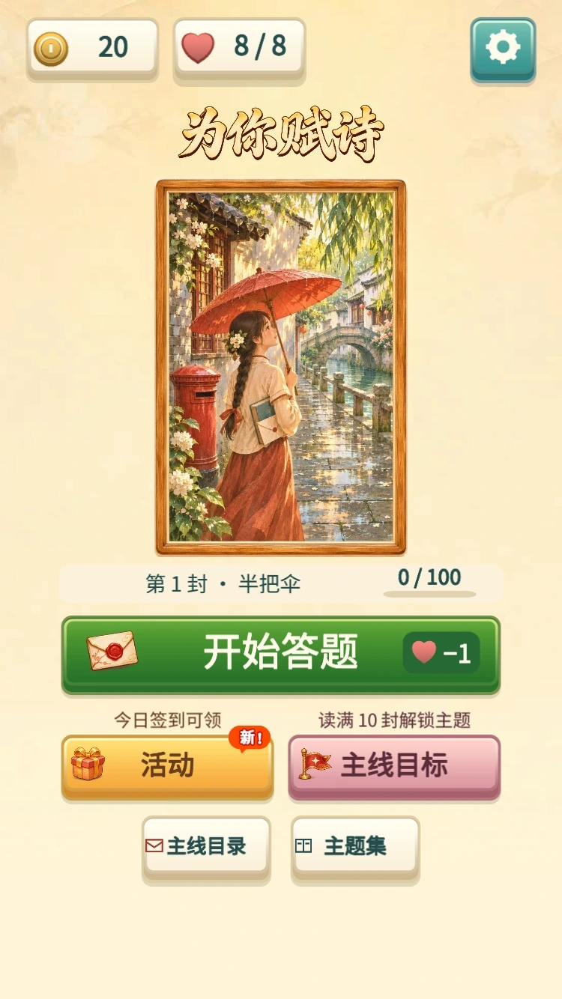
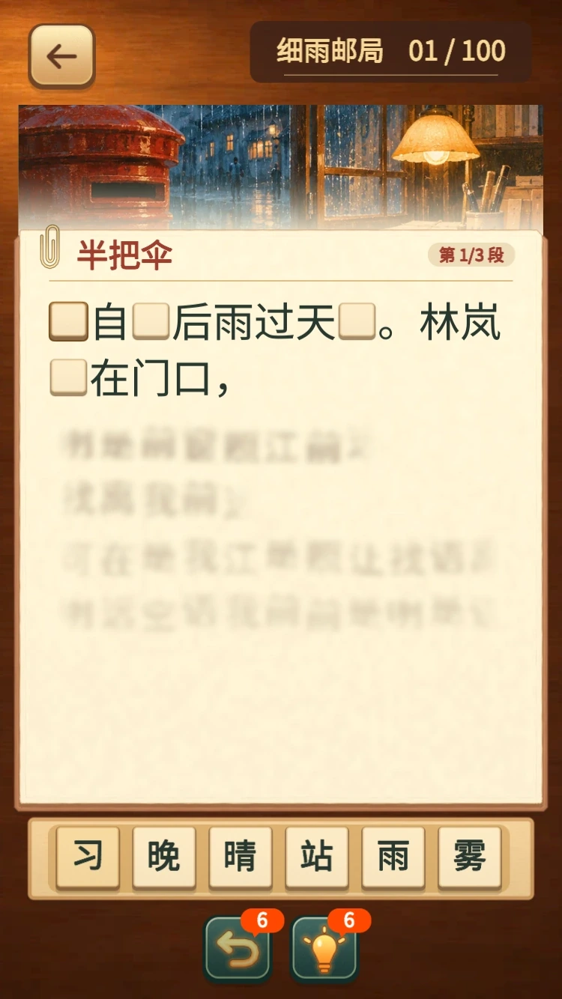
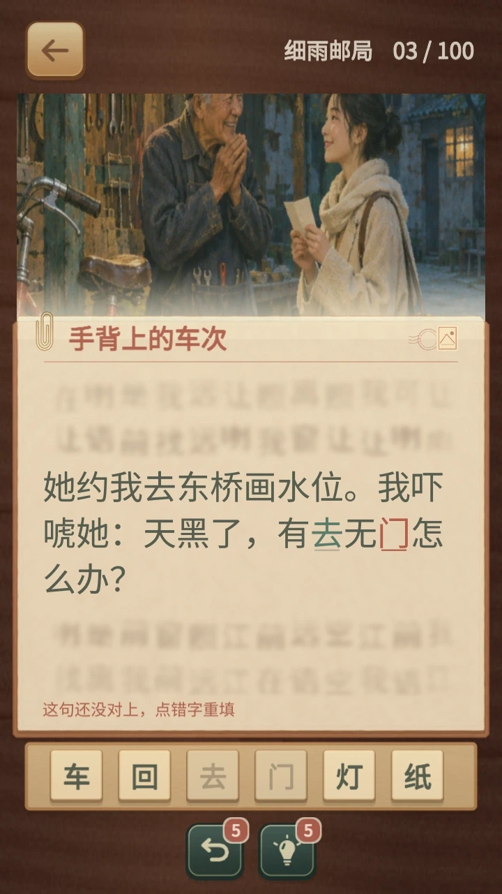
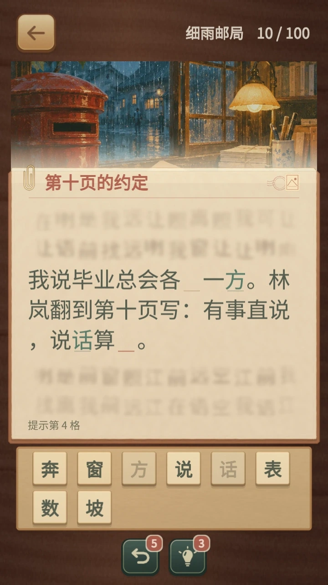
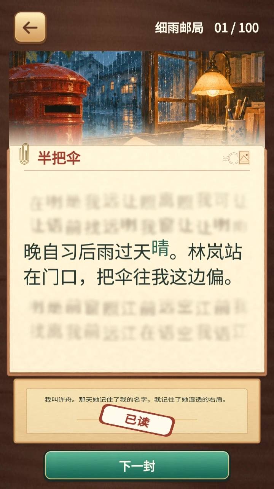
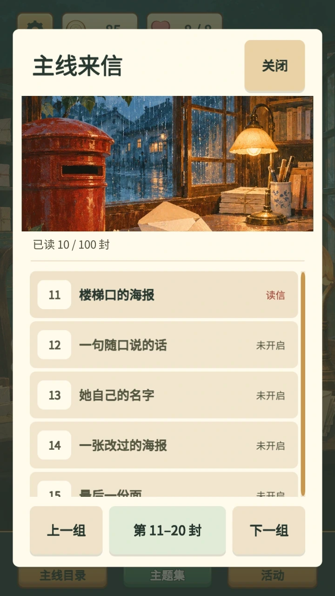
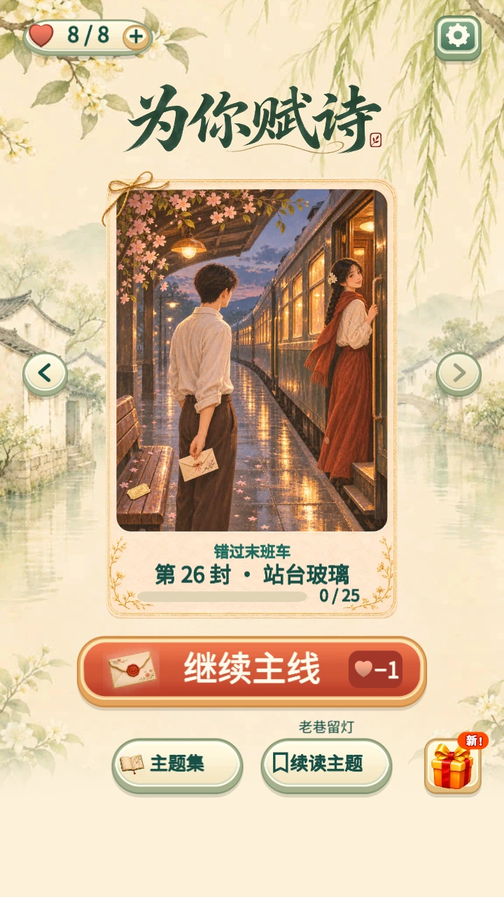
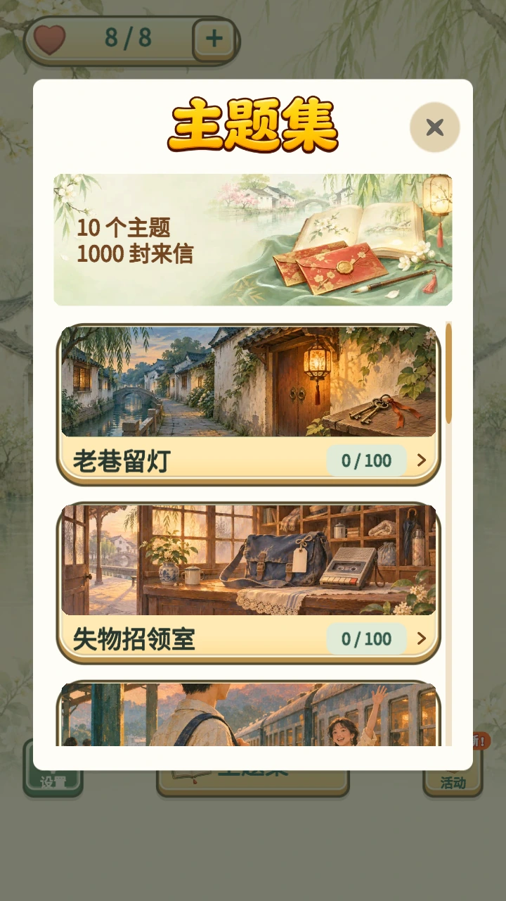
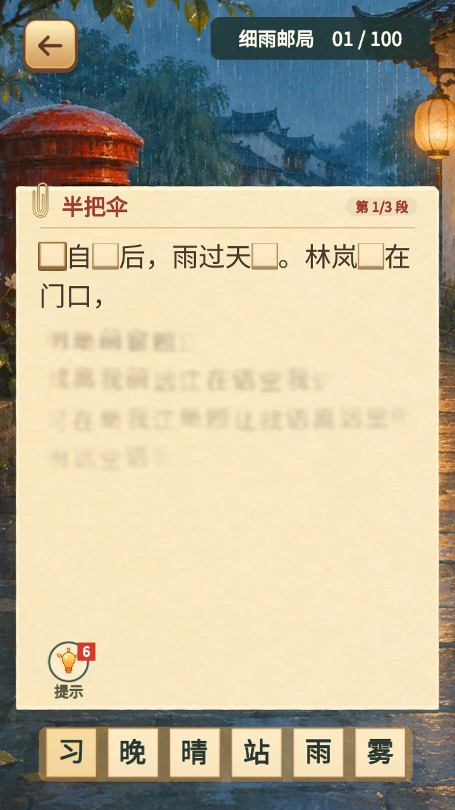
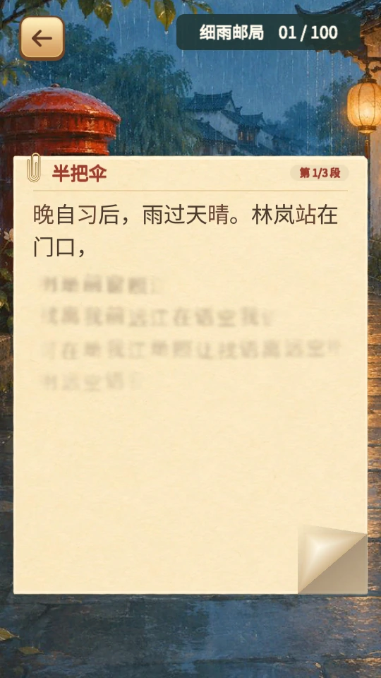

竖屏文字解谜 / 书信叙事
为你赋诗.
用候选字补完来信，跟随四幕主线和配乐读完两位主角的一生，再翻开十个独立主题。
Unity · 微信测试包 0.5.0 / Windows 开发版
填完整封信，再读下一段故事
拿起一封来信，按上下文从字盘补字。0.5.0 把当前段落显示清楚，前后文保留虚焦字迹。填对一段后，答案随落笔音效写回正文，阅读焦点移到下一段。整篇完成后盖上邮戳，记录通关和首次奖励。




错在哪里，就改哪里
段落填满后判定。已确认的字保留在信纸上，错字标红，点按即可退回原来的候选位置。剩下一个难字时，可以先定位空格再用提示。0.4.2 的本地验证画面保留了纠错与定点提示，便于对照两种操作。




邮戳把解题接回阅读
通关画面把零散的字补回原文，玩家可以先读完这封再翻页。前期用短句练习操作，后期如第七十一封把候选盘扩为三行，保留相同的填字规则，让难度来自上下文和备选字。



书信目录保留回读的线索
校园、青春、中年和晚年各由二十五封信推进。目录每十封分组，每一幕配一首原创循环曲，换幕时平滑过渡。前十封陆续交代选字、纠错和提示，第十封完成后开放主题集。主线 100 关与十个百关主题共 1,100 关。图为 0.4.2 的目录与主题集，0.5.0 首页和答题画面来自 Unity 本地运行。



翻动信笺，找回上一章
11 月 28 日 Windows 开发验收中，江南首页的主线信笺可切换已解锁章节。每张信笺都标明该章的阅读进度，还可以回到旧章从头读。主题集集中展示封面与进度，打开详情再返回会保留排在眼前的位置。




写完一段，纸角轻翻
同日 Windows 开发构建将竖屏插画延伸到纸面和候选字盘下方。填完一段后，正文墨迹落定，纸角伴随翻纸声轻翻，阅读焦点移到下一段。页面上的这些画面来自本地电脑开发构建。



